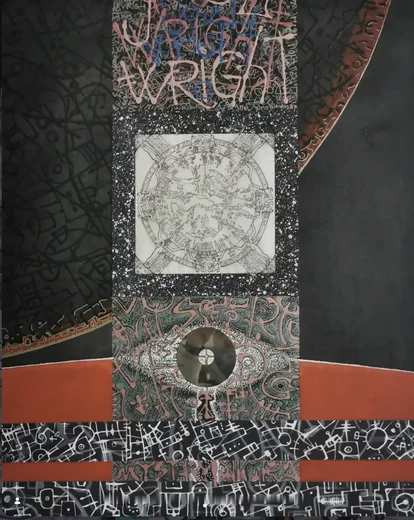
Opus 757 — ART-0001
În acest registru, Mugurel Emanuel Manea operează ca un scrib hieratic al unei civilizații hibride. Semnele nu mai cer o lectură fonetică, ci o contemplare a geometriei lor sacre.
O investigație plastică de o intensă densitate grafică, situată la confluența dintre anatomia biologică, osatura sacră și mecanicismul post-industrial. Structurată în cinci axe estetice fundamentale din creația artistului 757.

În acest registru, Mugurel Emanuel Manea operează ca un scrib hieratic al unei civilizații hibride. Semnele nu mai cer o lectură fonetică, ci o contemplare a geometriei lor sacre.
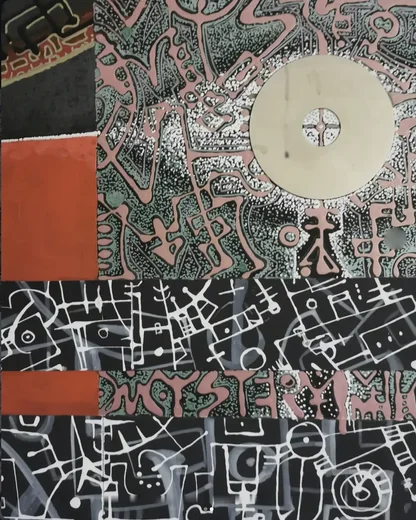
Verticalitatea operei impune o lectură ascensională, de la materia densă a bazei spre puritatea grafică a registrului superior. Un echilibru desăvârșit între arhaism și futurism.
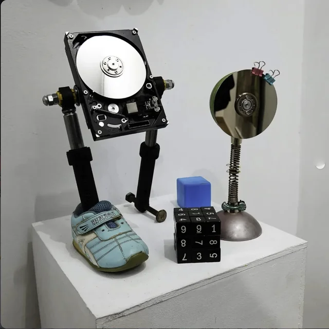
Tensiunea lucrării rezidă în antropomorfizarea poetic-violentă a tehnologiei dezafectate. Îmbinarea memoriei biologice cu memoria magnetică generează un totem animat al erei post-industriale.
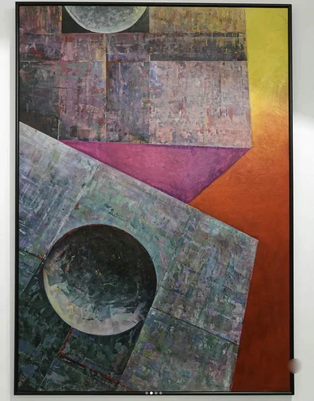
Picturalul și grafismul se contopesc aici într-o simbioză fericită: culoarea eliberează forma, în timp ce linia de tuș îi conferă rigoarea unei structuri imuabile.
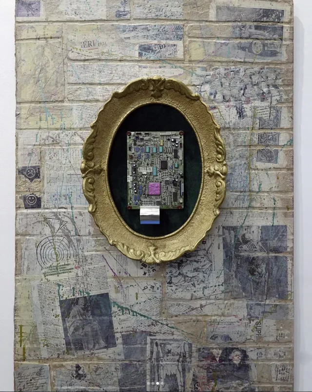
Artistul elaborează aici un arhetip al rezistenței: osatura devine bastion, iar mecanismul – scut protector împotriva efemerității biologice.
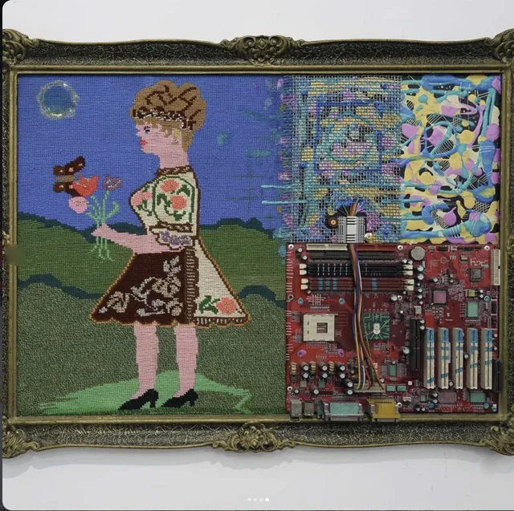
Artistul resemnifică deșeul tehnologic printr-o asamblare de o mare sensibilitate compozițională, transformând relicvele industriale într-o entitate sculpturală autonomă cu prezență totemică.
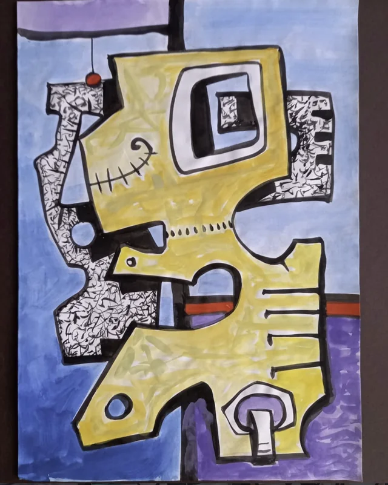
Verticalitatea operei impune o lectură ascensională, de la materia densă a bazei spre puritatea grafică a registrului superior. Un echilibru desăvârșit între arhaism și futurism.
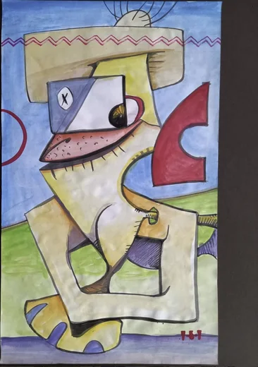
Compoziția reia tradiția coloanelor nesfârșite și a obeliscurilor ancestrale, translate într-un limbaj cyber-criptic. Registrele acționează ca straturi geologice ale cunoașterii, unde scrisul devine energie pură.
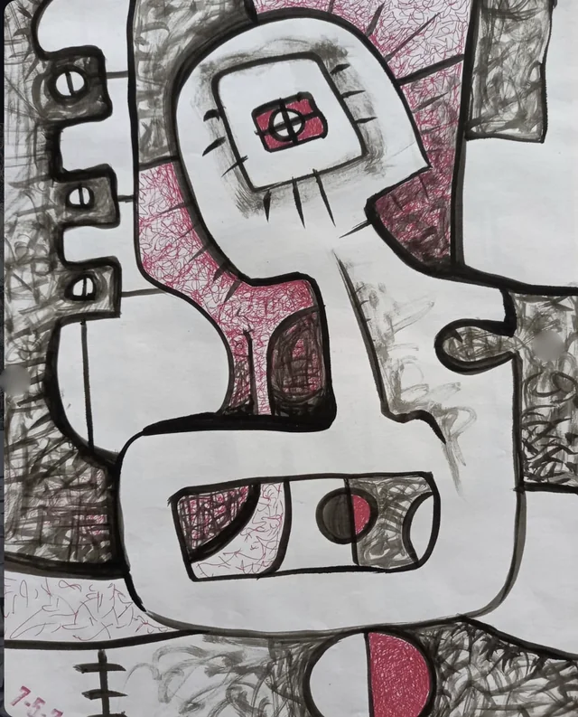
Artistul elaborează aici un arhetip al rezistenței: osatura devine bastion, iar mecanismul – scut protector împotriva efemerității biologice.
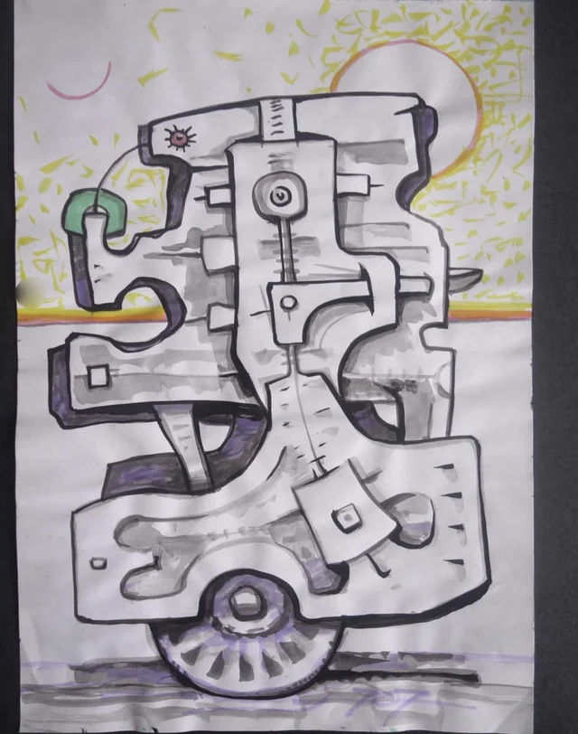
Privirea este invitată într-un periplu labirintic printre articulații și tendoane metalizate. Lucrarea afirmă o poetică a hibridizării unde tehnologia încetează să fie unealtă și devine substanță ontologică.
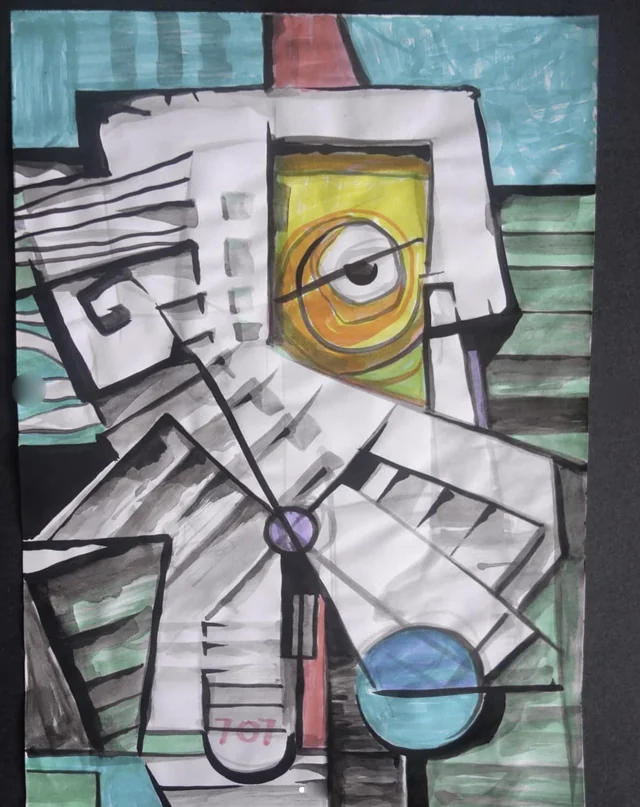
Forța acestei foi rezidă în coerența absolută a logicii interne a formei: mecanismul imaginat pare deplin funcțional, animat de o respirație interioară ce sfidează inerția metalului.
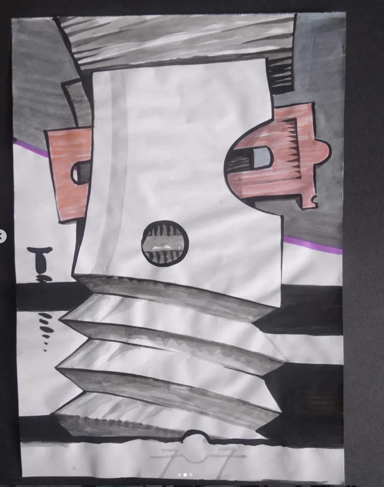
Prin clarobscurul dramatic și rigoarea axonometrică, lucrarea capătă o dimensiune oraculară, prefigurând o arheologie a formelor viitorului.
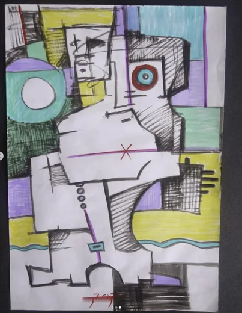
Compoziția reia tradiția coloanelor nesfârșite și a obeliscurilor ancestrale, translate într-un limbaj cyber-criptic. Registrele acționează ca straturi geologice ale cunoașterii, unde scrisul devine energie pură.
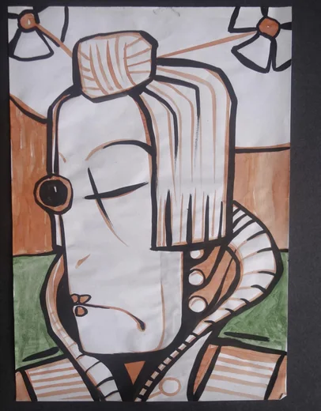
Monograma 757 transcende funcția semnăturii: ea funcționează ca o cheie de boltă simbolică ce unifică registrul grafic cu textura suportului într-o emblemă identitară inconfundabilă.
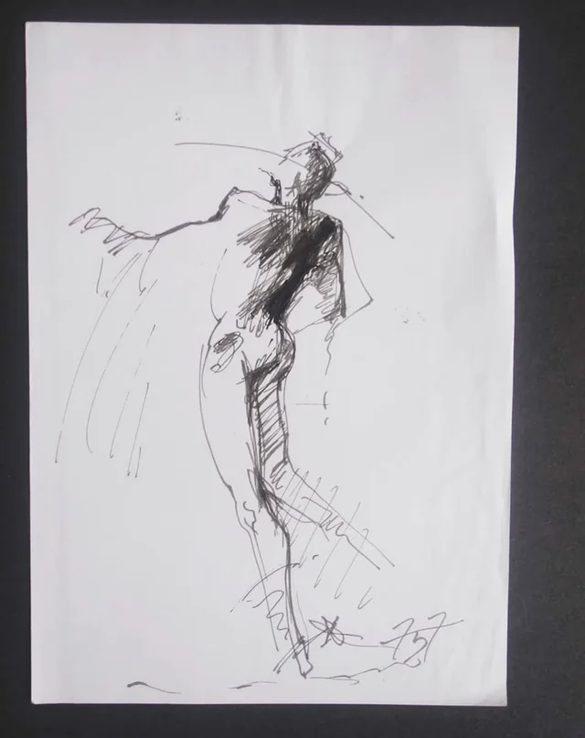
Forța acestei foi rezidă în coerența absolută a logicii interne a formei: mecanismul imaginat pare deplin funcțional, animat de o respirație interioară ce sfidează inerția metalului.
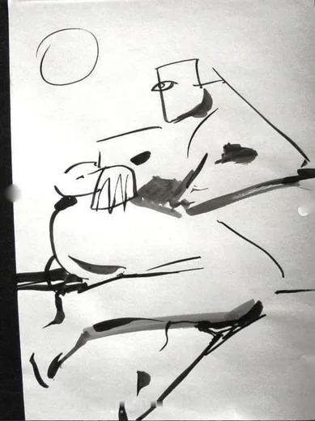
Prin clarobscurul dramatic și rigoarea axonometrică, lucrarea capătă o dimensiune oraculară, prefigurând o arheologie a formelor viitorului.
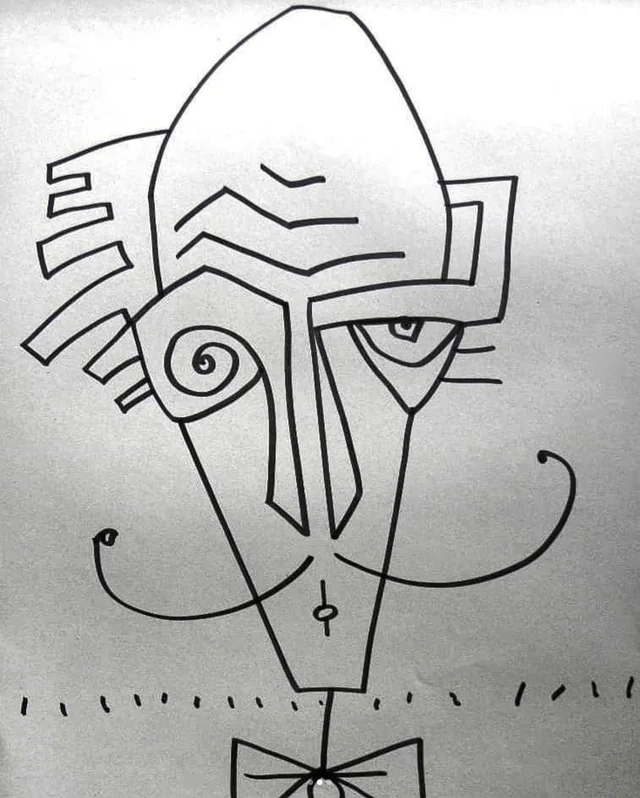
Artistul elaborează aici un arhetip al rezistenței: osatura devine bastion, iar mecanismul – scut protector împotriva efemerității biologice.
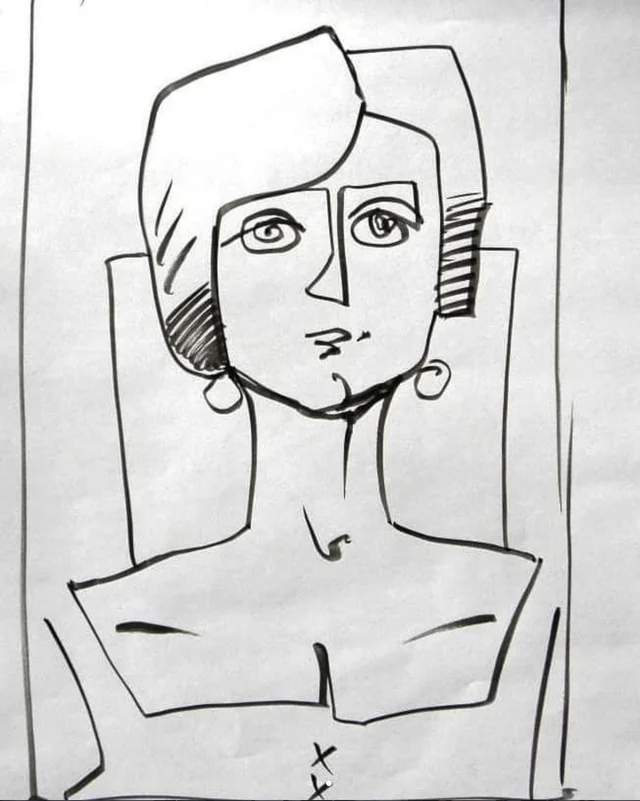
Privirea este invitată într-un periplu labirintic printre articulații și tendoane metalizate. Lucrarea afirmă o poetică a hibridizării unde tehnologia încetează să fie unealtă și devine substanță ontologică.
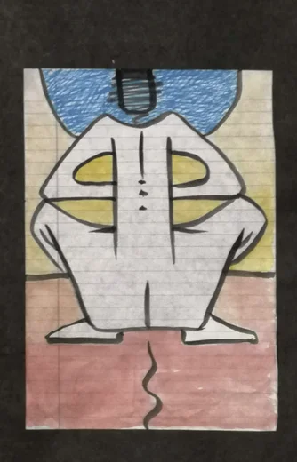
Picturalul și grafismul se contopesc aici într-o simbioză fericită: culoarea eliberează forma, în timp ce linia de tuș îi conferă rigoarea unei structuri imuabile.
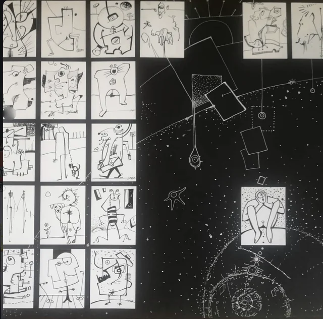
Geometria spațială nu este una statică, ci dinamică, animată de o tensiune arhitecturală care pare gata să se reconfigureze sub ochii noștri.
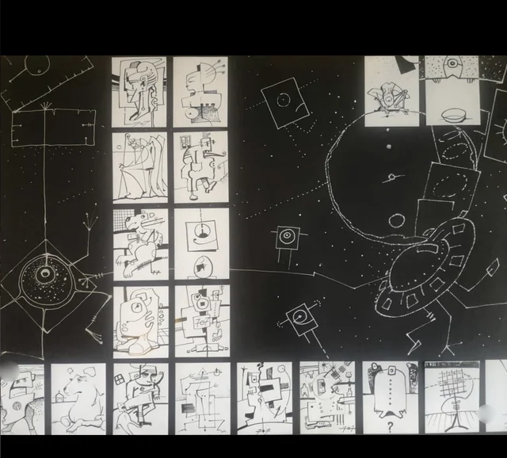
Artistul elaborează aici un arhetip al rezistenței: osatura devine bastion, iar mecanismul – scut protector împotriva efemerității biologice.
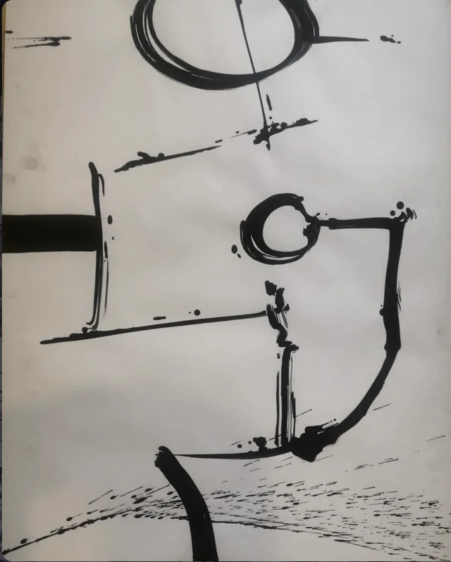
Privirea este invitată într-un periplu labirintic printre articulații și tendoane metalizate. Lucrarea afirmă o poetică a hibridizării unde tehnologia încetează să fie unealtă și devine substanță ontologică.
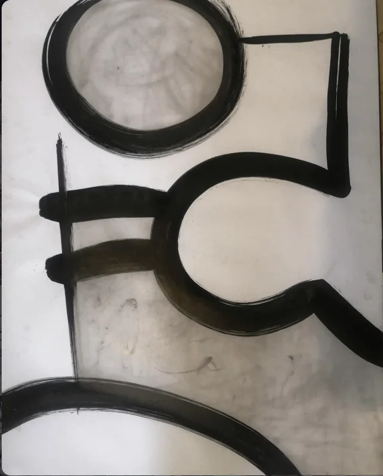
Forța acestei foi rezidă în coerența absolută a logicii interne a formei: mecanismul imaginat pare deplin funcțional, animat de o respirație interioară ce sfidează inerția metalului.
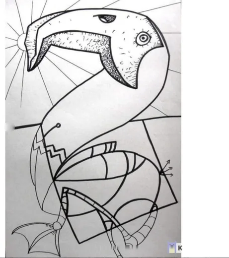
Prin clarobscurul dramatic și rigoarea axonometrică, lucrarea capătă o dimensiune oraculară, prefigurând o arheologie a formelor viitorului.
Analiză curatorială privind morfologia, tensiunea formei și materialitatea lucrărilor.
Compoziții dense în grafit și tuș ce investighează metamorfoza continuă dintre osatură, vertebre, cranii și angrenaje mecanice, pistoane hidraulice și articulații mobile de o rigoare anatomică desăvârșită.
Compoziții axiale ierarhizate în registre suprapuse, integrând grafisme ermetice, glife, scriere sacră și monograma recurentă 757, inspirate din tradiția stelelor ancestrale și a coloanelor nesfârșite.
Explorări picturale în tehnici mixte (tuș, guașă, pigment acrilic) ce introduc vibrații intense de teracotă, ocru cald, oxid de cupru și cobalt peste structuri geometrice deconstructiviste.
Artefacte sculpturale ready-made construite din componente tehnologice recuperate (platane magnetice HDD, arcuri industriale, elemente antropomorfe), unind memoria biologică cu memoria mecanică.
Viziuni spațiale piranesiene, labirinturi axonometrice și caverne structurale cu puncte multiple de fugă, unde arhitectura funcționează ca un organism viu, monumental și hipnotic.
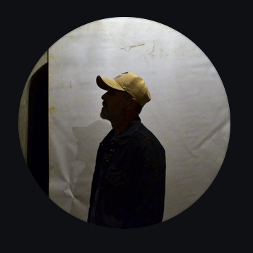
@mugurelemanuelmanea
Arhivă anterioară: @bogdan_by757
Semnătură canonică: 757
Mugurel Emanuel Manea profilează un univers plastic de o hipnotică rigoare, explorând dialogul ontologic dintre fragilitatea materiei organice și implacabila armătură tehnologică. Desenul său, definit printr-o măiestrie desăvârșită a hașurii polifonice și a ductului grafic incisiv, deschide carcase, vertebre și cavități craniene într-un studiu anatomic de o forță vizionară rară.
Monograma recurentă 757 transcende funcția unei simple semnături de atelier: ea acționează ca un sigiliu hieratic și cifru ontologic integrat în ritmul compozițional al fiecărei lucrări. Catalogul de față restituie acest fond artistic într-un spațiu de contemplație nobil, eliberat de orice convenție pasageră, dedicat exclusiv puterii evocatoare a formei și a liniei.
Fiecare operă din catalog este conservată cu respect absolut pentru fibra suportului, porozitatea hârtiei și gradienții naturali ai tușului și grafitului, excluzând orice alterare sintetică a desenului original.
Corpusul operelor este articulat pe baza afinităților morfologice din atelier: de la osteologia biomecanică la scrierea runică ermetică, compozițiile piranesiene și asamblajul tridimensional.
Semnul 757 străbate lucrările ca o emblemă identitară și liant conceptual, legând tradiția grafismului modern de o viziune oraculară asupra hibridizării om-mașină.